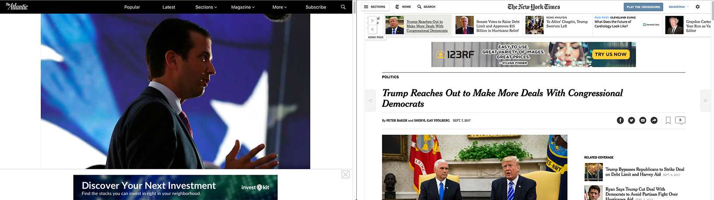

Very few readers of a news article make it to the end. Of those who stay, most don't even make it to the halfway point. This page uses data from Josh Schwartz's blogpost on Chartbeat to illustrate how readers would interact with an online article.
The most important information in an article should be given closer to the top of the page than the bottom. In journalism, this structure of writing is called the inverted pyramid.

The width of the pyramid represents the importance of the content. The lead reveals the style and previews the content of the article, which readers use to decide whether they want to continue. The nut graph summarizes the most important points of the story and states the immediate impact. The rest of an article contains contextual information.
In print media, the fold referred to the real, well, fold of the page. Above the fold referred to upper part of the front page that is immediately visible without needing to pick up the newspaper. To maximize readership, editors place the most important, most interesting headlines above the fold.
Though online media no longer have a physical fold, users still tend to leave articles before the end.
The fold is still used in digital media, but it instead refers to the last point of the page that can be seen by the user without scrolling. Something unusual happens in digital media.
The Atlantic, for example, starts its articles with a large image that takes up the entire page. The Washington Post and The New York Times both start most of their articles with an ad at the top, then the headline, and then a multimedia item.
In fact, for most major media sites, the body of the content does not start until below the fold.
Thus, unlike in print media, which puts content above the fold in order to increase visibility while reducing the amount of work a potential reader puts in, in the digital format, user input is required to begin reading. Why would digital formats diverge from the wisdom of print media?
This format, too, takes cues from reader behavior. About 30% of users begin scrolling before the page has finished loading, which means that they never see the top of the page. Starting the text lower in the page actually increases its readibility. In fact, the maximum visibility occurs at around 500 pixels, which is just above the fold when viewed on an average laptop screen and below the fold when viewed on mobile.
It's hard to say which came first, the page design or the user behavior, but either way, the presentation of a news story is still dictated by readers' habits. Because users usually stop reading early, the most important information is presented at the beginning of an article. Print media encourages reading by placing the text above the fold. Online media may display information differently, but chase the same principle: placing the most important information at the point of maximum readership.